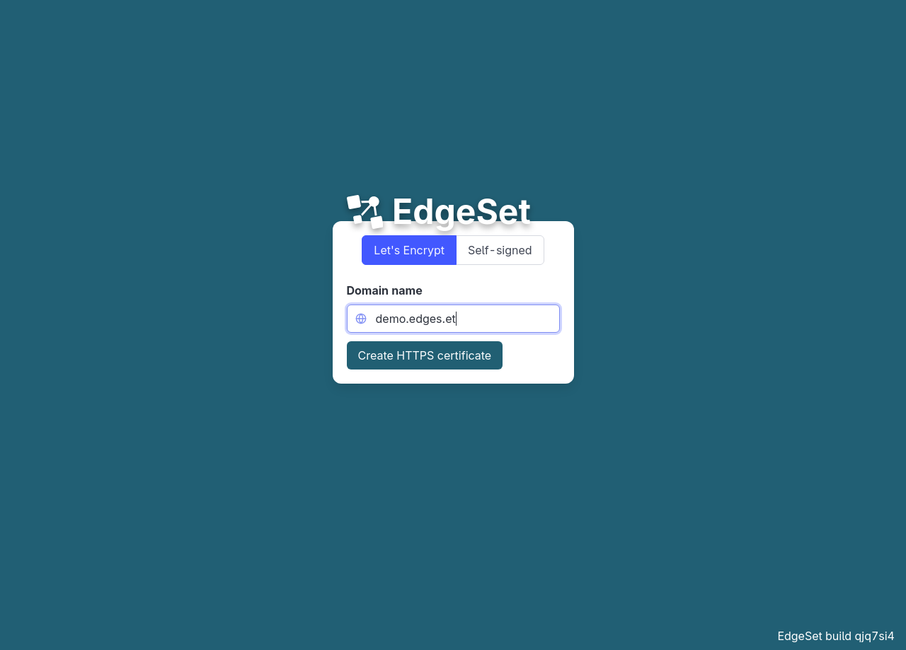
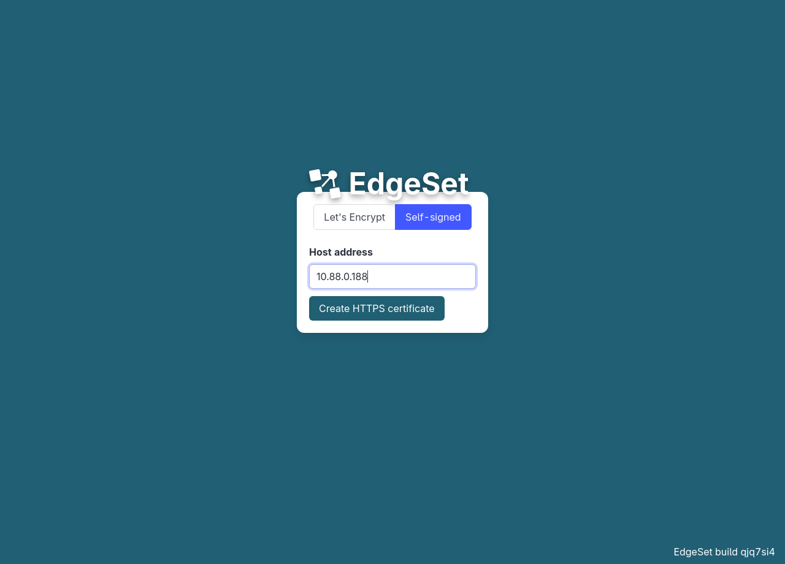
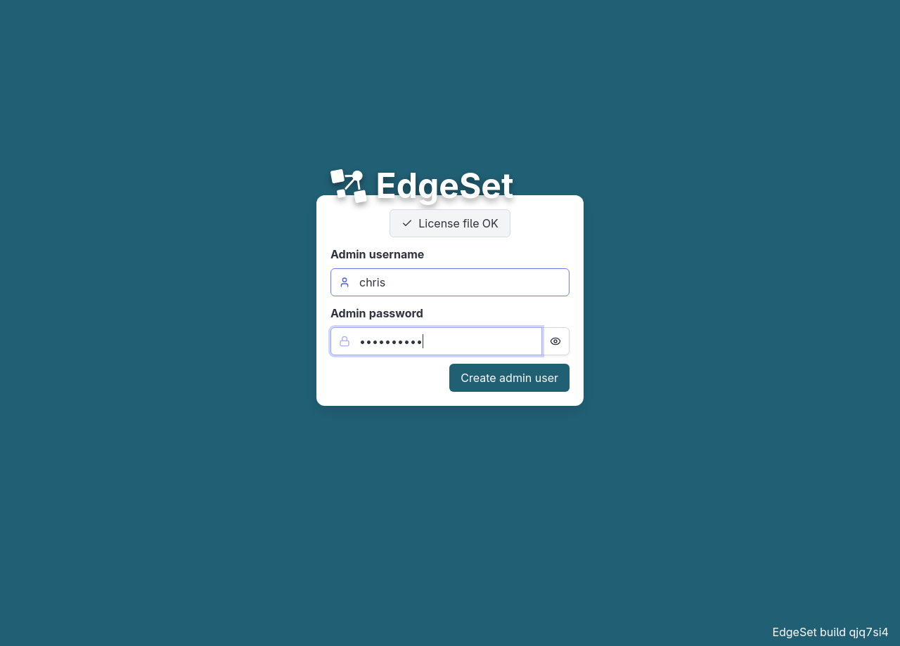
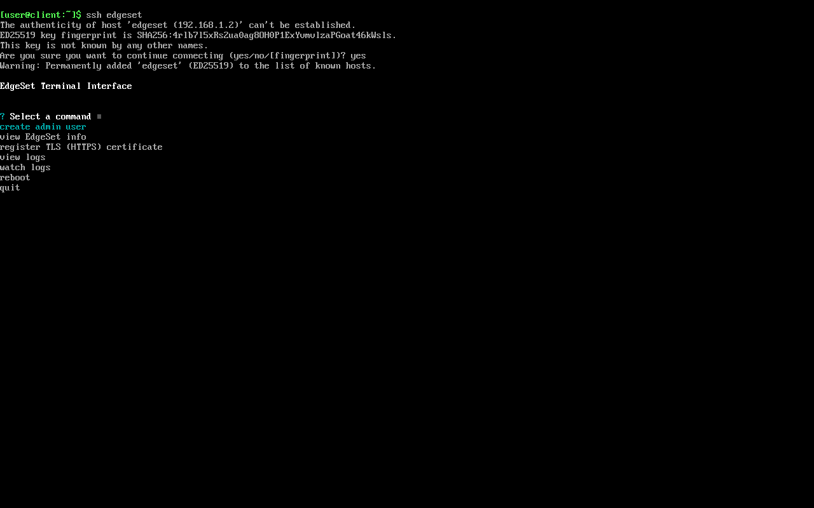

3 Setup
The following is not necessary if you installed the desktop application version of EdgeSet.
When your EdgeSet server boots for the first time, it begins listening for web requests (on TCP port 80). At this point, it does not have any user accounts or authentication.
3.1 DNS (optional)
You can navigate to your EdgeSet server using its IP address (e.g. http://10.88.0.188/), but you should assign it a domain name if possible (e.g. http://edgeset.your.org/). Doing so will allow you to register a trusted TLS certificate.
3.2 TLS certificate (HTTPS)
When you first navigate to the EdgeSet web interface, you’ll be prompted to setup a TLS certificate. This step is required, and it ensures that all communications with EdgeSet are encrypted, both via the web interface and with third-party clients.
3.2.1 Let’s Encrypt
EdgeSet can automatically register a certificate with Let’s Encrypt if your server’s port 80 (HTTP) is publicly routable via a valid domain name.

You must enter a valid email address. Let’s Encrypt will use this email address to send domain expiry notifications (if the automatic renewal process fails).
3.2.2 Self-signed
You can always create a self-signed certificate, even if your server is not connected to the internet.

The self-signed certificate will never expire, but your browser will warn you that it is not trusted. Some third party [Clients] might also refuse to connect.
3.3 Admin user
Before creating your first admin user, you must upload your license file. This prevents anyone without a license file from hijacking your EdgeSet instance during setup.
You can choose any username consisting of ASCII alphanumeric characters and dots (beginning with a letter). This user will be added to the special admin group.

Note that this first admin user is not special. You can add additional users to the admin group later and they will also receive full admin privileges.
3.4 SSH (optional)
If for any reason you are unable to access EdgeSet’s web interface, you can perform some operations via its terminal interface over SSH.
EdgeSet listens for SSH connections on TCP port 22. You can connect with any SSH client.
If you have not setup an admin user yet, you can connect with any username and no password. This is to allow you to perform initial setup (including creating an admin user) without using the web interface.

If you have already setup an admin user, you can connect with an admin username and password (just like connecting via the web interface).